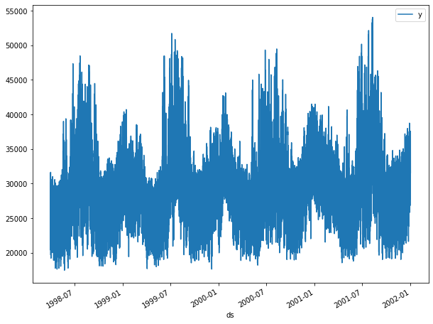
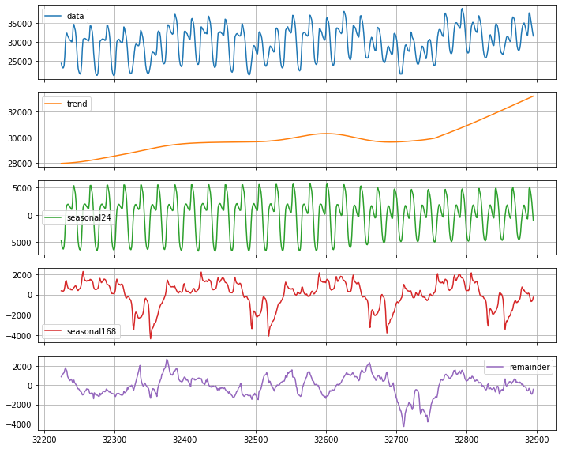
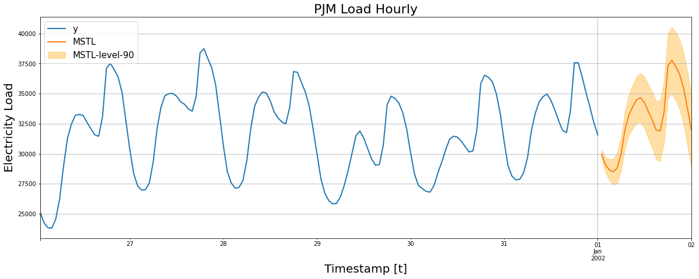
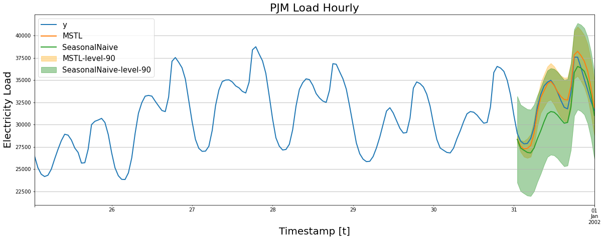
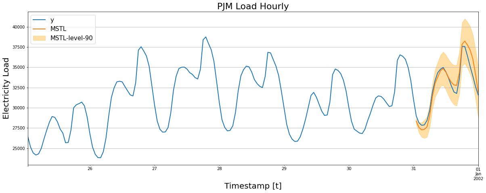
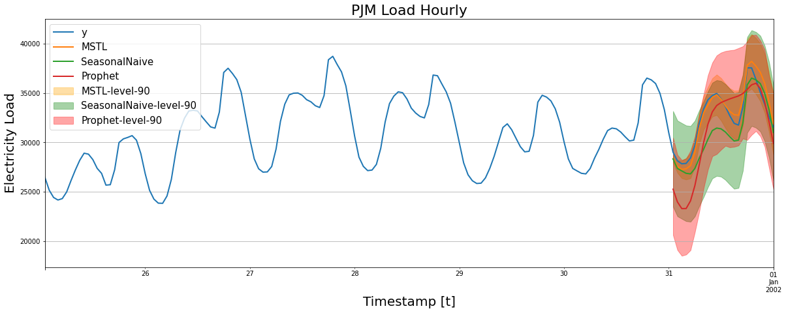
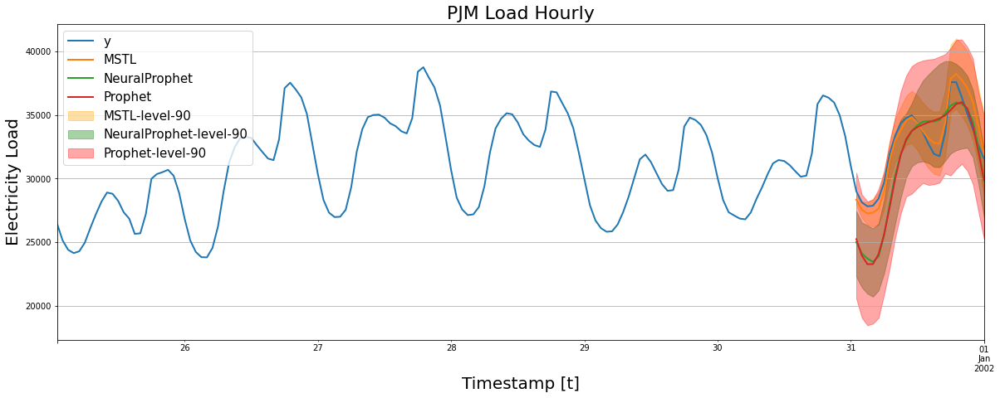

!pip install statsforecast
!pip install datasetsforecast
!pip install prophet
!pip install "neuralprophet[live]"Electricity load forecast
In this example we will show how to perform electricity load forecasting considering a model capable of handling multiple seasonalities (MSTL).

Introduction
Some time series are generated from very low frequency data. These data generally exhibit multiple seasonalities. For example, hourly data may exhibit repeated patterns every hour (every 24 observations) or every day (every 24 * 7, hours per day, observations). This is the case for electricity load. Electricity load may vary hourly, e.g., during the evenings electricity consumption may be expected to increase. But also, the electricity load varies by week. Perhaps on weekends there is an increase in electrical activity.
In this example we will show how to model the two seasonalities of the time series to generate accurate forecasts in a short time. We will use hourly PJM electricity load data. The original data can be found here.
Libraries
In this example we will use the following libraries: - [StatsForecast](https://Nixtla.github.io/statsforecast/core.html#statsforecast). Lightning ⚡️ fast forecasting with statistical and econometric models. Includes the MSTL model for multiple seasonalities. - DatasetsForecast. Used to evaluate the performance of the forecasts. - Prophet. Benchmark model developed by Facebook. - NeuralProphet. Deep Learning version of Prophet. Used as benchark.
Forecast using Multiple Seasonalities
Electricity Load Data
According to the dataset’s page,
PJM Interconnection LLC (PJM) is a regional transmission organization (RTO) in the United States. It is part of the Eastern Interconnection grid operating an electric transmission system serving all or parts of Delaware, Illinois, Indiana, Kentucky, Maryland, Michigan, New Jersey, North Carolina, Ohio, Pennsylvania, Tennessee, Virginia, West Virginia, and the District of Columbia. The hourly power consumption data comes from PJM’s website and are in megawatts (MW).
Let’s take a look to the data.
import matplotlib.pyplot as plt
import numpy as np
import pandas as pd
pd.plotting.register_matplotlib_converters()
plt.rc("figure", figsize=(10, 8))
plt.rc("font", size=10)df = pd.read_csv('https://raw.githubusercontent.com/jnagura/Energy-consumption-prediction-analysis/master/PJM_Load_hourly.csv')
df.columns = ['ds', 'y']
df.insert(0, 'unique_id', 'PJM_Load_hourly')
df['ds'] = pd.to_datetime(df['ds'])
df = df.sort_values(['unique_id', 'ds']).reset_index(drop=True)
df.tail()| unique_id | ds | y | |
|---|---|---|---|
| 32891 | PJM_Load_hourly | 2001-12-31 20:00:00 | 36392.0 |
| 32892 | PJM_Load_hourly | 2001-12-31 21:00:00 | 35082.0 |
| 32893 | PJM_Load_hourly | 2001-12-31 22:00:00 | 33890.0 |
| 32894 | PJM_Load_hourly | 2001-12-31 23:00:00 | 32590.0 |
| 32895 | PJM_Load_hourly | 2002-01-01 00:00:00 | 31569.0 |
df.plot(x='ds', y='y')<matplotlib.axes._subplots.AxesSubplot>
We clearly observe that the time series exhibits seasonal patterns. Moreover, the time series contains 32,896 observations, so it is necessary to use very computationally efficient methods to display them in production.
MSTL model
The MSTL (Multiple Seasonal-Trend decomposition using LOESS) model, originally developed by Kasun Bandara, Rob J Hyndman and Christoph Bergmeir, decomposes the time series in multiple seasonalities using a Local Polynomial Regression (LOESS). Then it forecasts the trend using a custom non-seasonal model and each seasonality using a SeasonalNaive model.
StatsForecast contains a fast implementation of the MSTL model. Also, the decomposition of the time series can be calculated.
from statsforecast import StatsForecast
from statsforecast.models import MSTL, AutoARIMA, SeasonalNaive
from statsforecast.utils import AirPassengers as ap/usr/local/lib/python3.7/dist-packages/statsforecast/core.py:14: TqdmExperimentalWarning: Using `tqdm.autonotebook.tqdm` in notebook mode. Use `tqdm.tqdm` instead to force console mode (e.g. in jupyter console)
from tqdm.autonotebook import tqdmFirst we must define the model parameters. As mentioned before, the electricity load presents seasonalities every 24 hours (Hourly) and every 24 * 7 (Daily) hours. Therefore, we will use [24, 24 * 7] as the seasonalities that the MSTL model receives. We must also specify the manner in which the trend will be forecasted. In this case we will use the AutoARIMA model.
mstl = MSTL(
season_length=[24, 24 * 7], # seasonalities of the time series
trend_forecaster=AutoARIMA() # model used to forecast trend
)Once the model is instantiated, we have to instantiate the StatsForecast class to create forecasts.
sf = StatsForecast(
models=[mstl], # model used to fit each time series
freq='H', # frequency of the data
)Fit the model
Afer that, we just have to use the fit method to fit each model to each time series.
sf = sf.fit(df=df)Decompose the time series in multiple seasonalities
Once the model is fitted, we can access the decomposition using the fitted_ attribute of StatsForecast. This attribute stores all relevant information of the fitted models for each of the time series.
In this case we are fitting a single model for a single time series, so by accessing the fitted_ location [0, 0] we will find the relevant information of our model. The MSTL class generates a model_ attribute that contains the way the series was decomposed.
sf.fitted_[0, 0].model_| data | trend | seasonal24 | seasonal168 | remainder | |
|---|---|---|---|---|---|
| 0 | 22259.0 | 26183.898892 | -5215.124554 | 609.000432 | 681.225229 |
| 1 | 21244.0 | 26181.599305 | -6255.673234 | 603.823918 | 714.250011 |
| 2 | 20651.0 | 26179.294886 | -6905.329895 | 636.820423 | 740.214587 |
| 3 | 20421.0 | 26176.985472 | -7073.420118 | 615.825999 | 701.608647 |
| 4 | 20713.0 | 26174.670877 | -7062.395760 | 991.521912 | 609.202971 |
| ... | ... | ... | ... | ... | ... |
| 32891 | 36392.0 | 33123.552727 | 4387.149171 | -488.177882 | -630.524015 |
| 32892 | 35082.0 | 33148.242575 | 3479.852929 | -682.928737 | -863.166767 |
| 32893 | 33890.0 | 33172.926165 | 2307.808829 | -650.566775 | -940.168219 |
| 32894 | 32590.0 | 33197.603322 | 748.587723 | -555.177849 | -801.013195 |
| 32895 | 31569.0 | 33222.273902 | -967.124123 | -265.895357 | -420.254422 |
32896 rows × 5 columns
Let’s look graphically at the different components of the time series.
sf.fitted_[0, 0].model_.tail(24 * 28).plot(subplots=True, grid=True)
plt.tight_layout()
plt.show()
We observe that there is a clear trend towards the high (orange line). This component would be predicted with the AutoARIMA model. We can also observe that every 24 hours and every 24 * 7 hours there is a very well defined pattern. These two components will be forecast separately using a SeasonalNaive model.
Produce forecasts
To generate forecasts we only have to use the predict method specifying the forecast horizon (h). In addition, to calculate prediction intervals associated to the forecasts, we can include the parameter level that receives a list of levels of the prediction intervals we want to build. In this case we will only calculate the 90% forecast interval (level=[90]).
forecasts = sf.predict(h=24, level=[90])
forecasts.head()| ds | MSTL | MSTL-lo-90 | MSTL-hi-90 | |
|---|---|---|---|---|
| unique_id | ||||
| PJM_Load_hourly | 2002-01-01 01:00:00 | 29956.744141 | 29585.187500 | 30328.298828 |
| PJM_Load_hourly | 2002-01-01 02:00:00 | 29057.691406 | 28407.498047 | 29707.884766 |
| PJM_Load_hourly | 2002-01-01 03:00:00 | 28654.699219 | 27767.101562 | 29542.298828 |
| PJM_Load_hourly | 2002-01-01 04:00:00 | 28499.009766 | 27407.640625 | 29590.378906 |
| PJM_Load_hourly | 2002-01-01 05:00:00 | 28821.716797 | 27552.236328 | 30091.197266 |
Let’s look at our forecasts graphically.
_, ax = plt.subplots(1, 1, figsize = (20, 7))
df_plot = pd.concat([df, forecasts]).set_index('ds').tail(24 * 7)
df_plot[['y', 'MSTL']].plot(ax=ax, linewidth=2)
ax.fill_between(df_plot.index,
df_plot['MSTL-lo-90'],
df_plot['MSTL-hi-90'],
alpha=.35,
color='orange',
label='MSTL-level-90')
ax.set_title('PJM Load Hourly', fontsize=22)
ax.set_ylabel('Electricity Load', fontsize=20)
ax.set_xlabel('Timestamp [t]', fontsize=20)
ax.legend(prop={'size': 15})
ax.grid()
In the next section we will plot different models so it is convenient to reuse the previous code with the following function.
def plot_forecasts(y_hist, y_true, y_pred, models):
_, ax = plt.subplots(1, 1, figsize = (20, 7))
y_true = y_true.merge(y_pred, how='left', on=['unique_id', 'ds'])
df_plot = pd.concat([y_hist, y_true]).set_index('ds').tail(24 * 7)
df_plot[['y'] + models].plot(ax=ax, linewidth=2)
colors = ['orange', 'green', 'red']
for model, color in zip(models, colors):
ax.fill_between(df_plot.index,
df_plot[f'{model}-lo-90'],
df_plot[f'{model}-hi-90'],
alpha=.35,
color=color,
label=f'{model}-level-90')
ax.set_title('PJM Load Hourly', fontsize=22)
ax.set_ylabel('Electricity Load', fontsize=20)
ax.set_xlabel('Timestamp [t]', fontsize=20)
ax.legend(prop={'size': 15})
ax.grid()Performance of the MSTL model
Split Train/Test sets
To validate the accuracy of the MSTL model, we will show its performance on unseen data. We will use a classical time series technique that consists of dividing the data into a training set and a test set. We will leave the last 24 observations (the last day) as the test set. So the model will train on 32,872 observations.
df_test = df.tail(24)
df_train = df.drop(df_test.index)MSTL model
In addition to the MSTL model, we will include the SeasonalNaive model as a benchmark to validate the added value of the MSTL model. Including StatsForecast models is as simple as adding them to the list of models to be fitted.
sf = StatsForecast(
models=[mstl, SeasonalNaive(season_length=24)], # add SeasonalNaive model to the list
freq='H'
)To measure the fitting time we will use the time module.
from time import timeTo retrieve the forecasts of the test set we only have to do fit and predict as before.
init = time()
sf = sf.fit(df=df_train)
forecasts_test = sf.predict(h=len(df_test), level=[90])
end = time()
forecasts_test.head()| ds | MSTL | MSTL-lo-90 | MSTL-hi-90 | SeasonalNaive | SeasonalNaive-lo-90 | SeasonalNaive-hi-90 | |
|---|---|---|---|---|---|---|---|
| unique_id | |||||||
| PJM_Load_hourly | 2001-12-31 01:00:00 | 28345.212891 | 27973.570312 | 28716.853516 | 28326.0 | 23468.693359 | 33183.308594 |
| PJM_Load_hourly | 2001-12-31 02:00:00 | 27567.455078 | 26917.085938 | 28217.824219 | 27362.0 | 22504.693359 | 32219.306641 |
| PJM_Load_hourly | 2001-12-31 03:00:00 | 27260.001953 | 26372.138672 | 28147.865234 | 27108.0 | 22250.693359 | 31965.306641 |
| PJM_Load_hourly | 2001-12-31 04:00:00 | 27328.125000 | 26236.410156 | 28419.839844 | 26865.0 | 22007.693359 | 31722.306641 |
| PJM_Load_hourly | 2001-12-31 05:00:00 | 27640.673828 | 26370.773438 | 28910.572266 | 26808.0 | 21950.693359 | 31665.306641 |
time_mstl = (end - init) / 60
print(f'MSTL Time: {time_mstl:.2f} minutes')MSTL Time: 0.43 minutesThen we were able to generate forecasts for the next 24 hours. Now let’s look at the graphical comparison of the forecasts with the actual values.
plot_forecasts(df_train, df_test, forecasts_test, models=['MSTL', 'SeasonalNaive'])
Let’s look at those produced only by MSTL.
plot_forecasts(df_train, df_test, forecasts_test, models=['MSTL'])
We note that MSTL produces very accurate forecasts that follow the behavior of the time series. Now let us calculate numerically the accuracy of the model. We will use the following metrics: MAE, MAPE, MASE, RMSE, SMAPE.
from datasetsforecast.losses import (
mae, mape, mase, rmse, smape
)def evaluate_performace(y_hist, y_true, y_pred, models):
y_true = y_true.merge(y_pred, how='left', on=['unique_id', 'ds'])
evaluation = {}
for model in models:
evaluation[model] = {}
for metric in [mase, mae, mape, rmse, smape]:
metric_name = metric.__name__
if metric_name == 'mase':
evaluation[model][metric_name] = metric(y_true['y'].values,
y_true[model].values,
y_hist['y'].values, seasonality=24)
else:
evaluation[model][metric_name] = metric(y_true['y'].values, y_true[model].values)
return pd.DataFrame(evaluation).Tevaluate_performace(df_train, df_test, forecasts_test, models=['MSTL', 'SeasonalNaive'])| mase | mae | mape | rmse | smape | |
|---|---|---|---|---|---|
| MSTL | 0.341926 | 709.932048 | 2.182804 | 892.888012 | 2.162832 |
| SeasonalNaive | 0.894653 | 1857.541667 | 5.648190 | 2201.384101 | 5.868604 |
We observe that MSTL has an improvement of about 60% over the SeasonalNaive method in the test set measured in MASE.
Comparison with Prophet
One of the most widely used models for time series forecasting is Prophet. This model is known for its ability to model different seasonalities (weekly, daily yearly). We will use this model as a benchmark to see if the MSTL adds value for this time series.
from prophet import Prophet
# create prophet model
prophet = Prophet(interval_width=0.9)
init = time()
prophet.fit(df_train)
# produce forecasts
future = prophet.make_future_dataframe(periods=len(df_test), freq='H', include_history=False)
forecast_prophet = prophet.predict(future)
end = time()
# data wrangling
forecast_prophet = forecast_prophet[['ds', 'yhat', 'yhat_lower', 'yhat_upper']]
forecast_prophet.columns = ['ds', 'Prophet', 'Prophet-lo-90', 'Prophet-hi-90']
forecast_prophet.insert(0, 'unique_id', 'PJM_Load_hourly')
forecast_prophet.head()DEBUG:cmdstanpy:input tempfile: /tmp/tmpc6f7_v9l/08tirxvt.json
DEBUG:cmdstanpy:input tempfile: /tmp/tmpc6f7_v9l/gp60b_b1.json
DEBUG:cmdstanpy:idx 0
DEBUG:cmdstanpy:running CmdStan, num_threads: None
DEBUG:cmdstanpy:CmdStan args: ['/usr/local/lib/python3.7/dist-packages/prophet/stan_model/prophet_model.bin', 'random', 'seed=27632', 'data', 'file=/tmp/tmpc6f7_v9l/08tirxvt.json', 'init=/tmp/tmpc6f7_v9l/gp60b_b1.json', 'output', 'file=/tmp/tmpc6f7_v9l/prophet_modelkou9navr/prophet_model-20221111002506.csv', 'method=optimize', 'algorithm=lbfgs', 'iter=10000']
00:25:06 - cmdstanpy - INFO - Chain [1] start processing
INFO:cmdstanpy:Chain [1] start processing
00:25:58 - cmdstanpy - INFO - Chain [1] done processing
INFO:cmdstanpy:Chain [1] done processing| unique_id | ds | Prophet | Prophet-lo-90 | Prophet-hi-90 | |
|---|---|---|---|---|---|
| 0 | PJM_Load_hourly | 2001-12-31 01:00:00 | 25255.037078 | 20589.007557 | 30472.856691 |
| 1 | PJM_Load_hourly | 2001-12-31 02:00:00 | 23961.427979 | 19078.763798 | 28752.007690 |
| 2 | PJM_Load_hourly | 2001-12-31 03:00:00 | 23285.418846 | 18491.391041 | 28213.042892 |
| 3 | PJM_Load_hourly | 2001-12-31 04:00:00 | 23293.143264 | 18620.414846 | 28364.115196 |
| 4 | PJM_Load_hourly | 2001-12-31 05:00:00 | 24067.737572 | 19062.318724 | 29162.041606 |
time_prophet = (end - init) / 60
print(f'Prophet Time: {time_prophet:.2f} minutes')Prophet Time: 0.93 minutestimes = pd.DataFrame({'model': ['MSTL', 'Prophet'], 'time (mins)': [time_mstl, time_prophet]})
times| model | time (mins) | |
|---|---|---|
| 0 | MSTL | 0.425080 |
| 1 | Prophet | 0.928628 |
We observe that the time required for Prophet to perform the fit and predict pipeline is greater than MSTL. Let’s look at the forecasts produced by Prophet.
forecasts_test = forecasts_test.merge(forecast_prophet, how='left', on=['unique_id', 'ds'])plot_forecasts(df_train, df_test, forecasts_test, models=['MSTL', 'SeasonalNaive', 'Prophet'])
We note that Prophet is able to capture the overall behavior of the time series. However, in some cases it produces forecasts well below the actual value. It also does not correctly adjust the valleys.
evaluate_performace(df_train, df_test, forecasts_test, models=['MSTL', 'Prophet', 'SeasonalNaive'])| mase | mae | mape | rmse | smape | |
|---|---|---|---|---|---|
| MSTL | 0.341926 | 709.932048 | 2.182804 | 892.888012 | 2.162832 |
| Prophet | 1.107472 | 2299.413375 | 7.427523 | 2742.792022 | 7.789355 |
| SeasonalNaive | 0.894653 | 1857.541667 | 5.648190 | 2201.384101 | 5.868604 |
In terms of accuracy, Prophet is not able to produce better forecasts than the SeasonalNaive model, however, the MSTL model improves Prophet’s forecasts by 69% (MASE).
Comparison with NeuralProphet
NeuralProphet is the version of Prophet using deep learning. This model is also capable of handling different seasonalities so we will also use it as a benchmark.
from neuralprophet import NeuralProphet
neuralprophet = NeuralProphet(quantiles=[0.05, 0.95])
init = time()
neuralprophet.fit(df_train.drop(columns='unique_id'))
future = neuralprophet.make_future_dataframe(df=df_train.drop(columns='unique_id'), periods=len(df_test))
forecast_np = neuralprophet.predict(future)
end = time()
forecast_np = forecast_np[['ds', 'yhat1', 'yhat1 5.0%', 'yhat1 95.0%']]
forecast_np.columns = ['ds', 'NeuralProphet', 'NeuralProphet-lo-90', 'NeuralProphet-hi-90']
forecast_np.insert(0, 'unique_id', 'PJM_Load_hourly')
forecast_np.head()INFO - (NP.df_utils._infer_frequency) - Major frequency H corresponds to 99.973% of the data.
INFO:NP.df_utils:Major frequency H corresponds to 99.973% of the data.
INFO - (NP.df_utils._infer_frequency) - Dataframe freq automatically defined as H
INFO:NP.df_utils:Dataframe freq automatically defined as H
INFO - (NP.config.init_data_params) - Setting normalization to global as only one dataframe provided for training.
INFO:NP.config:Setting normalization to global as only one dataframe provided for training.
INFO - (NP.config.set_auto_batch_epoch) - Auto-set batch_size to 64
INFO:NP.config:Auto-set batch_size to 64
INFO - (NP.config.set_auto_batch_epoch) - Auto-set epochs to 76
INFO:NP.config:Auto-set epochs to 76WARNING - (py.warnings._showwarnmsg) - /usr/local/lib/python3.7/dist-packages/torch/nn/modules/loss.py:922: UserWarning: Using a target size (torch.Size([64, 1, 1])) that is different to the input size (torch.Size([64, 1, 3])). This will likely lead to incorrect results due to broadcasting. Please ensure they have the same size.
return F.smooth_l1_loss(input, target, reduction=self.reduction, beta=self.beta)
WARNING:py.warnings:/usr/local/lib/python3.7/dist-packages/torch/nn/modules/loss.py:922: UserWarning: Using a target size (torch.Size([64, 1, 1])) that is different to the input size (torch.Size([64, 1, 3])). This will likely lead to incorrect results due to broadcasting. Please ensure they have the same size.
return F.smooth_l1_loss(input, target, reduction=self.reduction, beta=self.beta)
WARNING - (py.warnings._showwarnmsg) - /usr/local/lib/python3.7/dist-packages/torch/nn/modules/loss.py:922: UserWarning: Using a target size (torch.Size([324, 1, 1])) that is different to the input size (torch.Size([324, 1, 3])). This will likely lead to incorrect results due to broadcasting. Please ensure they have the same size.
return F.smooth_l1_loss(input, target, reduction=self.reduction, beta=self.beta)
WARNING:py.warnings:/usr/local/lib/python3.7/dist-packages/torch/nn/modules/loss.py:922: UserWarning: Using a target size (torch.Size([324, 1, 1])) that is different to the input size (torch.Size([324, 1, 3])). This will likely lead to incorrect results due to broadcasting. Please ensure they have the same size.
return F.smooth_l1_loss(input, target, reduction=self.reduction, beta=self.beta)
INFO - (NP.utils_torch.lr_range_test) - lr-range-test results: steep: 3.89E-02, min: 2.68E-01
INFO:NP.utils_torch:lr-range-test results: steep: 3.89E-02, min: 2.68E-01INFO - (NP.utils_torch.lr_range_test) - lr-range-test results: steep: 5.03E-02, min: 1.82E-01
INFO:NP.utils_torch:lr-range-test results: steep: 5.03E-02, min: 1.82E-01
INFO - (NP.forecaster._init_train_loader) - lr-range-test selected learning rate: 5.81E-02
INFO:NP.forecaster:lr-range-test selected learning rate: 5.81E-02
Epoch[76/76]: 100%|██████████| 76/76 [02:17<00:00, 1.81s/it, SmoothL1Loss=0.00872, MAE=2.27e+3, RMSE=3.03e+3, Loss=0.00862, RegLoss=0]
INFO - (NP.df_utils._infer_frequency) - Major frequency H corresponds to 99.973% of the data.
INFO:NP.df_utils:Major frequency H corresponds to 99.973% of the data.
INFO - (NP.df_utils._infer_frequency) - Defined frequency is equal to major frequency - H
INFO:NP.df_utils:Defined frequency is equal to major frequency - H
INFO - (NP.df_utils.return_df_in_original_format) - Returning df with no ID column
INFO:NP.df_utils:Returning df with no ID column
INFO - (NP.df_utils._infer_frequency) - Major frequency H corresponds to 95.833% of the data.
INFO:NP.df_utils:Major frequency H corresponds to 95.833% of the data.
INFO - (NP.df_utils._infer_frequency) - Defined frequency is equal to major frequency - H
INFO:NP.df_utils:Defined frequency is equal to major frequency - H
INFO - (NP.df_utils._infer_frequency) - Major frequency H corresponds to 95.833% of the data.
INFO:NP.df_utils:Major frequency H corresponds to 95.833% of the data.
INFO - (NP.df_utils._infer_frequency) - Defined frequency is equal to major frequency - H
INFO:NP.df_utils:Defined frequency is equal to major frequency - H
INFO - (NP.df_utils.return_df_in_original_format) - Returning df with no ID column
INFO:NP.df_utils:Returning df with no ID column| unique_id | ds | NeuralProphet | NeuralProphet-lo-90 | NeuralProphet-hi-90 | |
|---|---|---|---|---|---|
| 0 | PJM_Load_hourly | 2001-12-31 01:00:00 | 25015.931641 | 22304.785156 | 27442.351562 |
| 1 | PJM_Load_hourly | 2001-12-31 02:00:00 | 24125.677734 | 21462.275391 | 26571.785156 |
| 2 | PJM_Load_hourly | 2001-12-31 03:00:00 | 23730.714844 | 20973.000000 | 26321.234375 |
| 3 | PJM_Load_hourly | 2001-12-31 04:00:00 | 23469.591797 | 20735.953125 | 26097.132812 |
| 4 | PJM_Load_hourly | 2001-12-31 05:00:00 | 23887.208984 | 21221.152344 | 26459.939453 |
time_np = (end - init) / 60
print(f'Prophet Time: {time_np:.2f} minutes')Prophet Time: 2.39 minutestimes = times.append({'model': 'NeuralProphet', 'time (mins)': time_np}, ignore_index=True)
times| model | time (mins) | |
|---|---|---|
| 0 | MSTL | 0.425080 |
| 1 | Prophet | 0.928628 |
| 2 | NeuralProphet | 2.393841 |
We observe that NeuralProphet requires a longer processing time than Prophet and MSTL.
forecasts_test = forecasts_test.merge(forecast_np, how='left', on=['unique_id', 'ds'])plot_forecasts(df_train, df_test, forecasts_test, models=['MSTL', 'NeuralProphet', 'Prophet'])
The forecasts graph shows that NeuralProphet generates very similar results to Prophet, as expected.
evaluate_performace(df_train, df_test, forecasts_test, models=['MSTL', 'NeuralProphet', 'Prophet', 'SeasonalNaive'])| mase | mae | mape | rmse | smape | |
|---|---|---|---|---|---|
| MSTL | 0.341926 | 709.932048 | 2.182804 | 892.888012 | 2.162832 |
| NeuralProphet | 1.089964 | 2263.060303 | 7.310210 | 2681.742759 | 7.651353 |
| Prophet | 1.107472 | 2299.413375 | 7.427523 | 2742.792022 | 7.789355 |
| SeasonalNaive | 0.894653 | 1857.541667 | 5.648190 | 2201.384101 | 5.868604 |
With respect to numerical evaluation, NeuralProphet improves the results of Prohet, as expected, however, MSTL improves over NeuralProphet’s foreacasts by 68% (MASE).
Important
The performance of NeuralProphet can be improved using hyperparameter optimization, which can increase the fitting time significantly. In this example we show its performance with the default version.
Conclusion
In this post we introduced MSTL, a model originally developed by Kasun Bandara, Rob Hyndman and Christoph Bergmeir capable of handling time series with multiple seasonalities. We also showed that for the PJM electricity load time series offers better performance in time and accuracy than the Prophet and NeuralProphet models.
References
Give us a ⭐ on Github